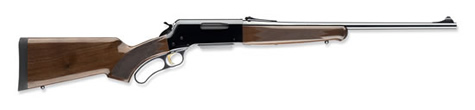
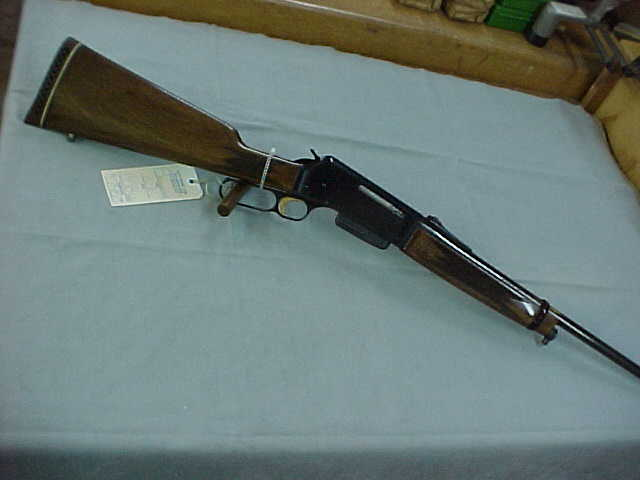
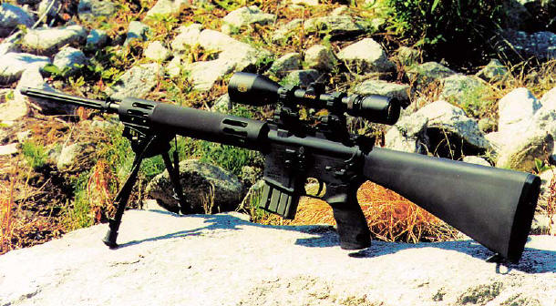
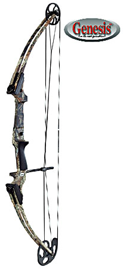
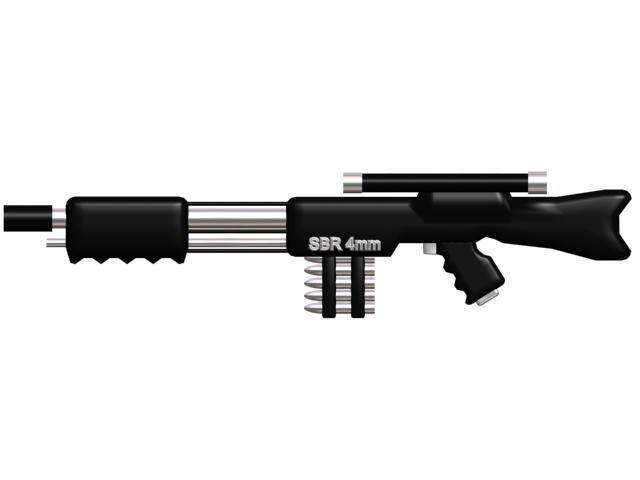

Rifles
|  |
The blr lightweight hunting rifle is an excellent rifle for the hunter pursuing the elusive critters of the world.
At a price of $149, this rifle provides reliable and accurate service at an excellent price. |
|
|  |
The browning blr .358 caliber rifle offers improved accuracy and stopping power from its smaller cousin the lightweight rifle.
At a price of $199, this rifle is the perfect blend of power, accuracy and reliability when it comes to critter hunting. |
|
|  |
The bushmaster varminter rifle contains a calibrated scope with semi-automatic firing, this rifle is guaranteed to stop a jackalope
dead in its tracks and give even rabbits cause to fear. With its tested precision scope, it is ideal for the patient hunter.
At a price of $249, this rifle provides the excellent opportunity to end the chase before it begins. |
|
 |
For that feeling you used to get hunting with older rifles, the miller classic delivers without the old problems. Tested for
endurance in the field, the miller classic provides a unique hunting experience. It has a calibrated scope for improved accuracy
and is built with easier maintenance in mind. At $229, this rifle delivers not only an enjoyable hunting experience, but also enjoyable
kills. |
|
Bows and Crossbows
 |
The longbow provides reliability and functionality at a reasonable price. This basic model leaves little to the imagination
but it gets the job done as well as any bullet will. With a 20lb pullback strength and sturdy frame, it will put an arrow through
any critter without making the commotion that firing a rifle can produce. At $99, this bow speaks for itself. |
|
|  |
A fusion of old and new technology, the genesis longbow contains the latest in silicate carbon technology in its
frame while keeping the old ideas that make longbows great. With adjustable pullback strengths and replaceable arrow heads,
this bow is ready to go anytime and anywhere. Tested over to fire 15000 times, this bow provides excellent precision and power
combined with survivability and endurance and comes at the price of $189 with quiver and 20 arrows provided. |
|
 |
The crossbow provides superior firepower and precision while being easy to reload and even easier to fire. A silent and effective way of taking down any critter a hunter may
encount in the wild. Priced at $149, this crossbow provides excellent firepower without
the drawbacks of bows and guns. |
|
Specialty Weapons
|  |
The railgun is for the hunter who does not prefer to leave anything other than unrecognizable smears in their trail. It packs the power to reduce any critter to a bloody paste as well as anything that lies between the hunter and said critter.
Be it rocks, trees, small children or other hunters, the railgun will fire its solid metal round in an unerring straight line. At $499, this
experimental weapon will belong to any extreme hunter who doesn't hunt just for the sport, but for the joy of tearing small animals apart
with massive chunks of metal. |
|
|
This holy artifact was used by many a crusader when wolpertingers were a much more common threat than they are today.
Being hunted nearly to extinction, the wolpertinger has become a rarity in the world, making these grenades a rarity as well. When the proper
words are recited, this grenade will seek out the wolpertinger and blow it to pieces in God's mercy for only $399. Monks not included |
|